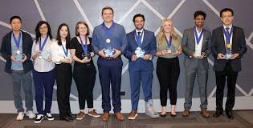
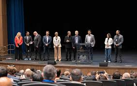

Our History
TechCon began in 2010 as a small gathering of technology enthusiasts and has since grown into one of the premier technology conferences in the region. Over the years, TechCon has hosted thousands of attendees, featured groundbreaking innovations, and fostered a vibrant community of professionals and learners.


Our Mission
TechCon is dedicated to inspiring innovation, fostering collaboration, and empowering the next generation of technology leaders. Our mission is to create a platform where ideas are shared, connections are made, and the future of technology is shaped together.
Notable Past Speakers
Alex Johnson
Alex Johnson is a pioneer in artificial intelligence and has contributed to major advancements in machine learning. At TechCon 2022, Alex delivered a keynote on ethical AI and its impact on society.
Maya Lee
Maya Lee is a renowned cybersecurity expert and advocate for digital privacy. She shared insights on emerging threats and strategies for building resilient digital infrastructures at TechCon 2023.
Raj Patel
Raj Patel has led innovations in cloud computing and scalable systems. His session at TechCon 2021 inspired attendees to rethink the possibilities of distributed technology.